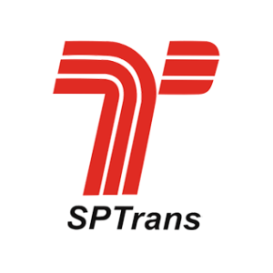
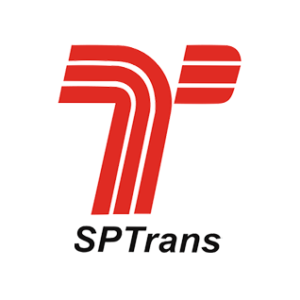

Sistema Web Gestão Tributária
Simulador de retenções online, sistema de envio rápido da EFD-Reinf, artigos e legislação focados nas incidências de INSS, Imposto de Renda, Contribuições Sociais e ISS na fonte.
Simulador de retenções online, sistema de envio rápido da EFD-Reinf, artigos e legislação focados nas incidências de INSS, Imposto de Renda, Contribuições Sociais e ISS na fonte.
Gestão Tributária de Capacitação e treinamento para administração pública e privada Capacitação e treinamento especializado para gestão tributária, leis trabalhistas, previdência social e privada, licitações e contratos na administração de empresas públicas e privadas em todo o Brasil.


Braço de atuação da Open Soluções Tributárias que tem com foco principal a redução e a recuperação de créditos tributários, bem como o planejamento da incidência de tributos devidos pelas empresas e entidades públicas em geral.
Publicação da obra Gestão Tributária de Contratos e Convênios, que já está em sua 9ª edição e é a obra mais completa do mercado acerca das principais retenções e encargos tributários incidentes sobre a contratação de pessoas físicas e jurídicas, abordando o INSS, o Imposto de Renda, as Contribuições Sociais (CSLL, PIS/Pasep, Cofins) e também o ISS.

A Open Consultoria Tributária, braço da Open Soluções Tributárias, atua desde 2007 com foco na redução e recuperação de créditos tributários, além de planejamento estratégico para empresas e entidades públicas. Liderada pelo Dr. Alexandre Marques, especialista com mais de 25 anos de experiência, oferece soluções inovadoras, incluindo consultoria, treinamentos (presenciais e online), publicações e o sistema web Gestão Tributária, com a poderosa ferramenta GT-Fácil.
.png) 


.png)
A Open Editora também é responsável pela publicação da obra Gestão Tributária de Contratos
e
Convênios, que já está em sua 9ª edição e é a obra mais completa do mercado acerca das
principais
retenções e encargos tributários incidentes sobre a contratação de pessoas físicas e jurídicas,
abordando o INSS, o Imposto de Renda, as Contribuições Sociais (CSLL, PIS/Pasep, Cofins) e também o
ISS.
Além dessa obra, de autoria do Prof. Alexandre Marques Andrade Lemos, a Open editou também o
único
livro do mercado focado na Tributação da Atividade de Saúde, contemplando orientações e explicações
acerca do recolhimento de tributos por parte de empresas e profissionais do segmento.
Acesse AQUI a nossa livraria virtual!
Quer receber um contato de nossa equipe para saber mais informações?